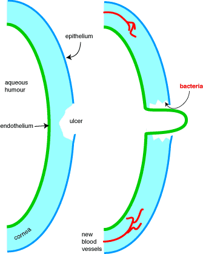

Anti-inflammatory drugs in the eye
Corticosteroids (usually hydrocortisone) are normally only used to stop blood vessel growth, pigment deposition and scarring in the cornea. They are contra-indicated in corneal ulceration as they can slow healing of the ulcer and may make the ulcer deeper. If the ulcer penetrates the full thickness of the cornea, the anterior chamber will burst resulting in blindness. Topical application gives higher concentrations at the cornea than systemic administration.

Corneal ulceration - if the ulcer penetrates the full thickness of the cornea, the vulnerable endothelium will "cone" out. If this ruptures, the lens and iris are usually displaced into the hole and the animal is unlikely to see out of that eye again.
NSAIDs are used to reduce the inflammation of surgery, particularly cataract removal. Sometimes used as anti-inflammatories in corneal ulceration. Diclofenac and flurbiprofen have been the traditional drugs.
| 4 Autonomic index |
| |
copyright
Massey University
|